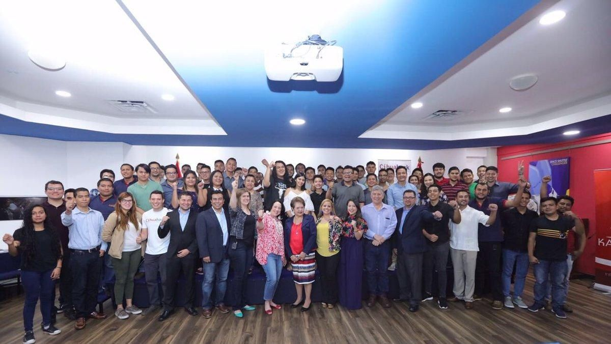

Jóvenes compiten recreando las ruinas de Cihuatán con realidad aumentada
250 jóvenes aprovecharán los desarrollos tecnológicos para recrear las ruinas de Cihuatán y podrían ganar consultorías o pasantías en Estados Unidos.
Por René Gómez
25 de Agosto de 2018 - 16:25 HS


Foto: cortesía Embajada de Estados Unidos
250 jóvenes universitarios tendrán la oportunidad de poner en práctica su creatividad de la mano de las herramientas tecnológicas más avanzadas, especialmente en el tema de realidad aumentada y realidad virtual.
Este sábado, el Centro Cultural Salvadoreño Americano, en conjunto con la Embajada de los Estados Unidos lanzaron el proyecto Cihuahack, que capacitará a los 250 jóvenes para que puedan recrear a través de la realidad aumentada las ruinas arqueológicas de Cihuatán.
El proyecto cuenta con el apoyo de Korinver, una empresa especialista en realidad aumentada y que será la encargada de formar a estos futuros talentos para que puedan desarrollar sus habilidades.
Foto: cortesía Embajada de Estados Unidos
La embajadora de los Estados Unidos, Jean Manes asistió al evento y motivó a los jóvenes a que sean creativos y que hagan sus ideas funcionar. Además explicó que en especial la llena de orgullo que sea Cihuatán el sitio arqueológico a recrear porque es uno de los lugares que más le gustan de El Salvador.
La siguiente fase será en octubre y ahí se darán a conocer las propuestas que estos jóvenes han desarrollado en los meses de preparación. Uno de los premios más importantes es la posibilidad de una pasantía en una empresa estadounidense especialista en realidad aumentada.
Tags
LO MÁS VISTO
MÁS DE TECHLIFE
Muere el youtuber "McSkillet" tras conducir en sentido contrario y matar a 2 mujeres en autopista de California, EUA
¿Cómo la pasión global por las teleseries de Korea del Sur lleva a los fans a trabajar gratis?
Día Tec presenta una app que revolucionará el transporte universitario
Día Tec presenta una app para movilizarte de forma segura